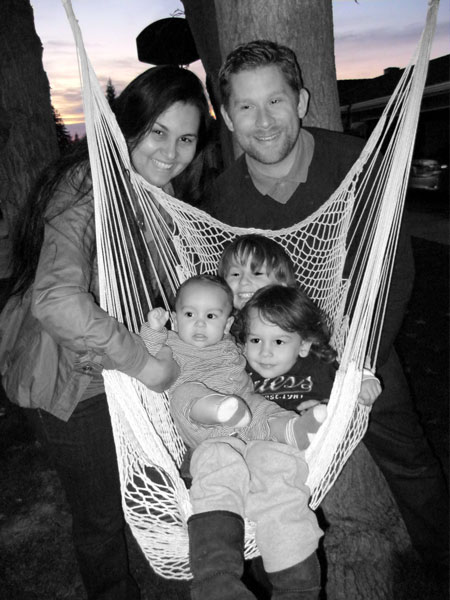

| english | español | português |
Oi, obrigado por visit meu site para aprender mais sobre mim. Meu nome e Michael e sou estudante de pos-graduacao de terapia familia de Loma Linda University. Adoro aprender sobre famílias e estudar as teorias que procuram fazer sentido do por que familia fazem o que fazem. Meu projeto, familytherapia.com, e um site do stilo Wikipedia onde procurei organizer estes conceitos e teorias da familia numa maneira que seja mais facil para que qualquer possa aprender.
Tambem adoro linguas e traducao. Atualmente falo ingles (obviamente) e portugues fluente. Quero consequir a mesma fluência, mas ainda no esta ao par dos outros. Sou tradutor freelance entre ingles e porguguese desde 2006. Caso voce esteja interessado em receber uma traducao entre ingles e portuguese, pode da uma sapiada na area de traducao. Se precisar de uma traducao realizada dentro da minha areas de especializao, mande um email para mim e lhe dou uma cotacao.
Tentei desenhar uuma site que voce possa facilmente me encontrar em todos os lugar que me encontro online, como o Facebook e LinkedIn. Tambem inclui alguns dos projetos que estoy fazendo no momento (embora bem devagarzinho), tais como os que mencionei antes, isso e o familytherapia.com e albrightfamily.org, que dedico a historia da minha propria familia.
Espero que tenha achado o que desejava quando veio para meu site. Se voce ainda esta curioso sobre mim, pode aprender um pouquinho mais aqui. Por favor, passe um email para mim se tiver qualquer pergunta ou sugestao sobre minha pessoa ou o que faco. Obrigado mesmo por visitar.